2021WIDC 信息安全挑战赛预赛回顾与 OBD-II 标准阅读
2021WIDC信息安全挑战赛预赛回顾与OBD-II标准阅读
周五参加了世界智能驾驶挑战赛(WIDC)信息安全挑战赛并通过了预赛，5月中旬将进行线下比拼。一共有 50多只队伍参赛，其中前13名晋级复赛。预赛为线上赛，比赛分为“基础理论”和“实操题” 。赛前根据主办方提供的竞赛范围，做了一些准备，主要是实操题中的车辆信息读取。没想到没用着，实操题做得并不好，没有理解出题人的出题思路，和技术支持聊聊，他说我想的太复杂了，他说考虑到参加的大多是学生，所以难度不会太高。下面简单回顾一下WIDC的预赛，然后记录一下OBD-II标准阅读及理解过程。
预赛回顾
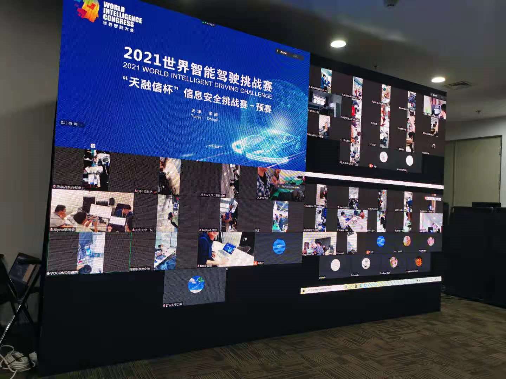
预赛采用线上答题模式。理论环节，半小时时间，由于伙伴有事情不在一块，于是一个人答题，采用双机位监控，实实在在做了一套卷子，有一种回到学生时代的感觉。赛题以选择、判断、填空的形式， 涵盖车辆相关的车载网络安全、无线安全、密码安全、OTA 安全、Web 安全、APP 安全、硬件安全等信息安全理论。实际考了 CAN 的传输距离、RSA 计算、TLS1.2 建立过程等。
实操部分，主要是考察对CAN报文的逆向分析，一共5题。前两题是动作信号分析，通过在页面触发开灯、开门等操作，在抓取的 CAN 报文中找到对应的报文。后面三题目是车辆信息读取，抽取车辆里程、故障码、VIN 码、车速、电池电量、车辆状态等 。
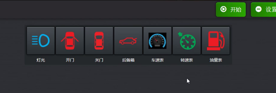
动作信号
开灯，点击三次。下载流量数据包，查找重复 3 次的报文。
1
2
3
4
5
6
7
8{"timestamp":1619168439571,"type":"request","id":0x621,"dlc":8,"data":[0x1,0x1,0x1,0x1,0x1,0x1,0x1,0x1]}
{"timestamp":1619168440559,"type":"request","id":0x621,"dlc":8,"data":[0x1,0x1,0x1,0x1,0x1,0x1,0x1,0x1]}
{"timestamp":1619168441233,"type":"request","id":0x750,"dlc":8,"data":[0x40,0x5,0x30,0x11,0x0,0x80,0x0,0x0]}
{"timestamp":1619168442266,"type":"request","id":0x621,"dlc":8,"data":[0x1,0x1,0x1,0x1,0x1,0x1,0x1,0x1]}
{"timestamp":1619168443103,"type":"request","id":0x750,"dlc":8,"data":[0x40,0x5,0x30,0x11,0x0,0x80,0x0,0x0]}
{"timestamp":1619168444135,"type":"request","id":0x621,"dlc":8,"data":[0x1,0x1,0x1,0x1,0x1,0x1,0x1,0x1]}
{"timestamp":1619168444212,"type":"request","id":0x750,"dlc":8,"data":[0x40,0x5,0x30,0x11,0x0,0x80,0x0,0x0]}
{"timestamp":1619168445242,"type":"request","id":0x621,"dlc":8,"data":[0x1,0x1,0x1,0x1,0x1,0x1,0x1,0x1]}得到结果
id: 0x750 dlc:8 data:0x40,0x5,0x30,0x11,0x0,0x80,0x0,0x0，最后发送此报文验证一下即可。其他的动作分析同理。车辆信息读取
车辆信息读取，看到题目就想到 UDS 和 SAE J1979( ISO 15031-5:2015 )，但是实际测试没有响应。
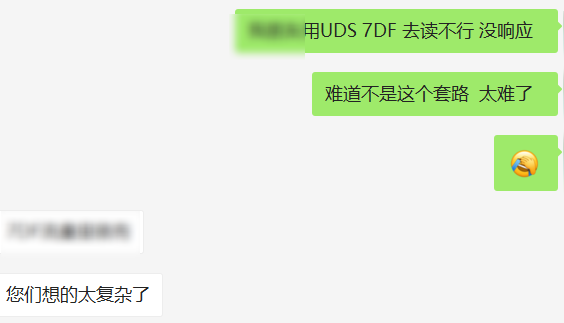
赛题解析还没出来，先谈谈之前准备的思路。以车速为例。查询车速的 CAN 报文如下。
1
7DF [8] 02 01 0D 55 55 55 55 55
ECU 收到消息后，回复的报文如下。
1
7E8 [8] 03 41 0D 32 AA AA AA AA
那么，速度就是32(0x20)Km/h。请求报文是怎么构造的，响应报文该如何解析。之前这类数据一直用诊断仪读，没有手动获取过，乘这次机会学习一下。
标准阅读
之前没有手动分析 OBD-II 的数据，打开英文的标准完全看不懂，现在稍微理清了，记录一下如何阅读 SAE J1979（ ISO 15031-5:2015）。标准主要有两部分构成，K线 和 CAN 的诊断服务定义，以下仅讲解 CAN 诊断部分。标准可以分为三个部分，消息格式定义、诊断服务详细定义以及附录。
表 1 中结合OSI 七层模型解释了 OBD-II 诊断所采用协议的层级关系，可以看出 SAE J1979 属于应用层协议。
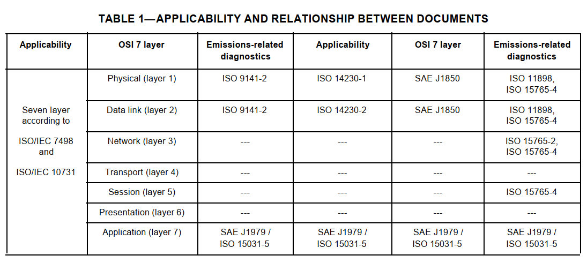
诊断消息格式
标准中定义了请求和响应包的格式。OBD-II 中 CAN 诊断使用 ISO 15765-4 中定义的消息格式。
表6中是请求消息的格式， ISO 15765-4 中的 SID 在 SAE J1979 中是等价的，即OBD-II 的模式(Mode)就是ISO 15765-4 中的SID。
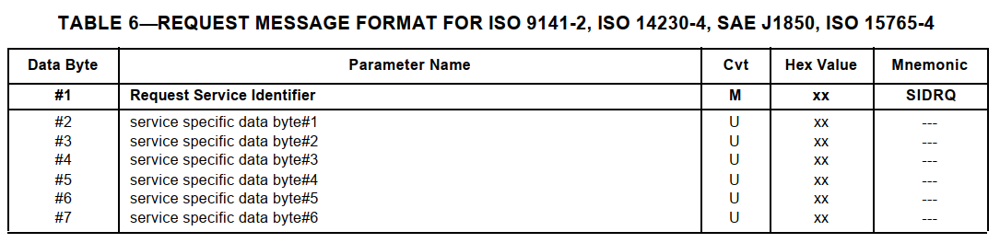
表8 是肯定响应的格式，SID+0x40 为肯定响应。
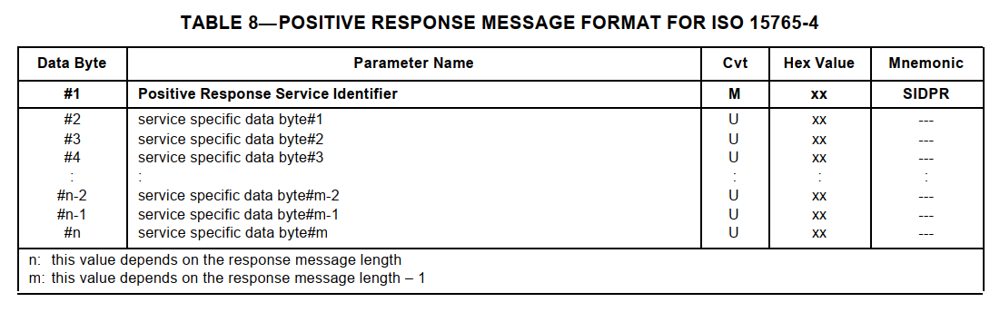
表9是否定响应的格式，否定响应的SID为 0x7F。具体的错误码定义可以标准的表10。
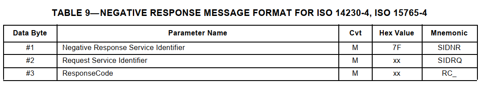
还有一个比较重要的表格（表13），表中列举了数据的格式。有些数据的格式是在其他标准定义的，这里也给出了如具体的标准编号，如 3、7 服务中 DTC(诊断码)参见 SAE J2012。还有正文与附录的关系，如附录B 是 PID 详细定义。
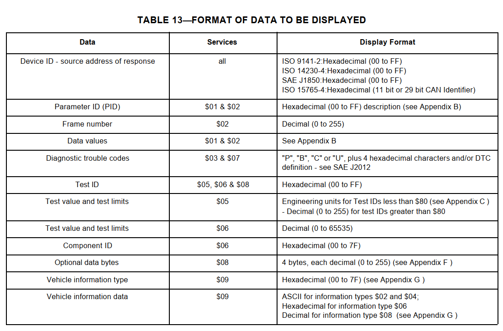
诊断消息定义
诊断消息的第二部分是基于 CAN 总线的诊断消息定义，标准中定义了9个模式，汽车制造商并不需要支持所有的模式，每个制造商也可以自行定义额外的模式，这9种模式如下：
模式01: 请求动力系诊断数据
识别动力系统信息并在诊断设备上显示当前可用数据，故障码定义车载测试状态和车辆数据（比如，发动机转速、温度、点火提前角、空气流量、燃油系统的闭环状态、车速、档位、电池电压、油量、油耗、总里程、本次里程等）。
模式02: 请求冻结帧数据
和模式1中的数据相同，但它是在一个故障发生和一个故障码被定义时获得并存储的。模式1中的某些参数识别(PIDs)在该模式中不适用。
模式03: 请求排放相关的诊断故障码
相关的故障码由识别故障的5位数编码组成。如果应答信息的数据字节中含多个故障码信息或多个ECU计算机进行应答，则可能产生多个应答信息。
模式04: 清楚/复位与排放相关的诊断信息
用于清除故障码和冻结帧数据。这将清除所有定义的故障码，包括冻结帧数据和就绪检测器定义的。
模式05: 请求氧传感器监测测试结果
该模式显示氧传感器检测页面和收集到的关于氧传感器的测试结果。有9个号码可用于诊断。
- 01 浓到稀，氧传感器阈值电压;
- 02 稀到浓，氧传感器阈值电压;
- 03 转换时间计算时传感器电压低；
- 04 转换时间计算时传感器电压高；
- 05 浓到稀切换时间，以ms为单位；
- 06 稀到浓切换时间，以ms为单位；
- 07 测试最小电压；
- 08 测试最大电压；
- 09 电压转换之间的时间，以ms为单位；
模式06: 请求非连续监测系统测试结果
通常有一个最小值，一个最大值，以及每个非连续监测系统的当前值。这项数据是可选项，如果需要，它由车辆制造商来定义。
模式07: 请求连续检测系统测试结构（只能在当前或最近的驾驶周期中检测）
在一次驾驶循环进行后，需要来自连续监测系统的故障码（未决）以判断固定问题需要维修。维修技术人员用此来确认是否正确维修且清除了故障码。**
模式08: 请求诊断组件/系统的控制操作
这个特殊控制模式需要车载系统，测试，或双向元件（如适合）的控制。这种模式是制造商指定的。
模式09: 请求车辆信息
该信息包括存储在车辆发动机控制单元（ECUs）中的车辆VIN码和标定信息。如车厂、型号、品牌、车架号、发动机号等。
在这部分中对每一个模式都进行详细的介绍，包含请求和响应消息的格式，以及每个字段的定义，也给出了实例。下面来看一下模式1 和模式9。
数据流报文(模式1)
读取速度、里程、油量等属于模式1 的动力系诊断数据，读取这些数据通称作读取数据流。
格式定义
消息的传输层使用 ISO-TP 协议。OBD 中 CAN 报文使用 11个字节的CAN ID(通常用3个十六进制表示)，数据部分由1个字节的数据长度（bytes）、1个字节的模式（Mode）、1个字节的 PID 以及 4 个字节的数据组成。
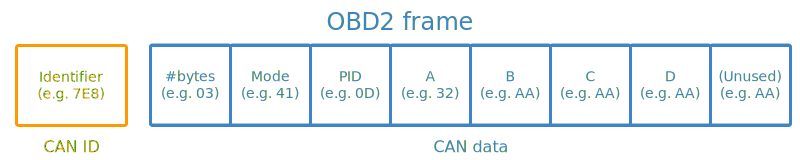
- CAN ID: 在 OBD-II 消息总，请求 CAN ID 为 7DF，响应 CAN ID 在 7E8 到 7EF 之间，7E8 一般是核心 ECU（行车电脑） 响应使用。
- 长度: CAN 数据的长度，从Mode到有效数据结尾的字节数。
模式：OBD-II 中定义了 10种模式，取值范围为 0x1~0xA。响应报文中，会根据请求报文中模式加上 0x40 计算得到响应报文中的模式值。在当前模式下，请求报文中模式的值为 0x1，响应报文汇总模式值为 0x41。
PID(parameter identification): PID 可以理解为子服务，与 UDS 中的子服务相似，PID 的定义在附录A中 。
- 数据: 4个字节的十六进制数据，响应包中的数据解析需要参考附录B。
查询支持的PID
PID 的范围在 0x00~0xc0之间，但不是每个ECU都支持每一个PID，使用之前可以通过发送请求查询哪些 PID 可用，格式固定如下表。

然后 ECU 收到之后，回复报文如下表。支持哪些 PID 需要根据附件 A 进行解析。
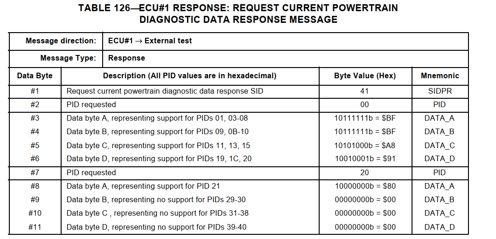
附录 A 中对响应包解析进行了说明。请求报文以每 0x20（32）个 PID 分组查询，响应报文中以 4个字节（32为）数据进行回应，每一个位表示一个 PID 是否支持。
以上表126中的第三个字节为例，10111111b（Data A），属于对 0~0x20 PID的查询，在表 A1 中找到 PID 为 00的请求的数据行，然后找到 Data A ，依此分析每一位，从高位开始，如果值为 1 ，就表示支持，否则就是不支持。
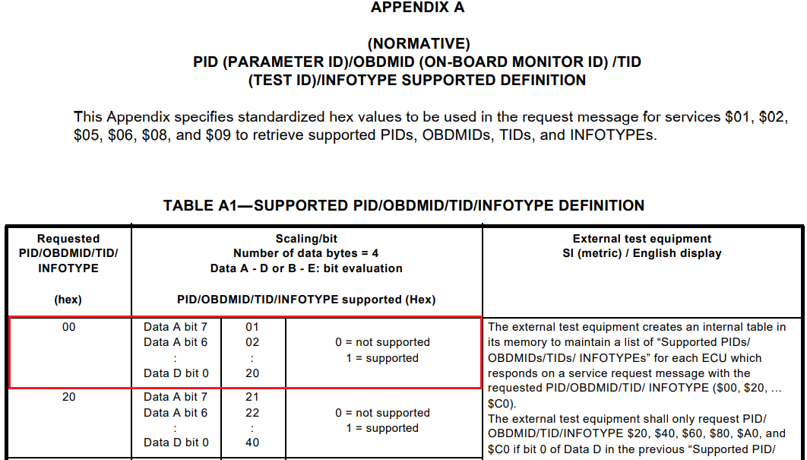
请求多个 PID
获取到支持的 PID后，根据PID查询数据流，可以多个 PID 一起查询，当然也可以只查询一个。查询请求格式如下表。
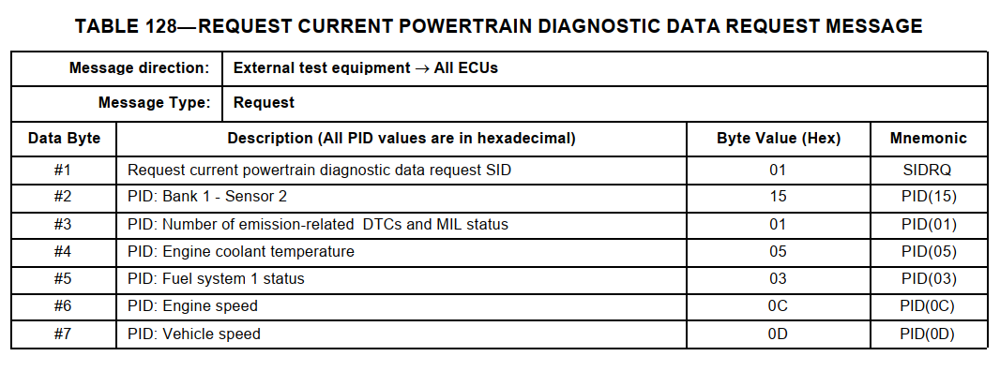
CAN 发送广播消息后，ECU 接收消息，判断是否需要自己处理，如果需要则回复相关的报文。其中 ECU2 回复了车速查询请求等。车速的 PID 为 0x0D，返回的数据为 0x23。关于 PID 的定义与数据字段的含义需要查询附录B。
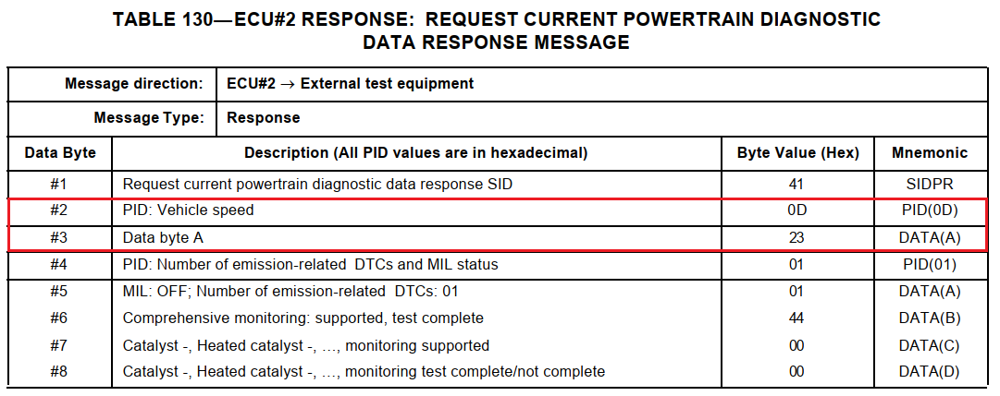
从附录B 中对 PID 0x0D 车速的描述，可以看到数据为只有一个字节A，速度范围在0~255km/s。数据字节说明写到，每一个bit代表一个1km/h，上面 ECU 回复数据为 0x23，于是计算出速度为 35km/h。
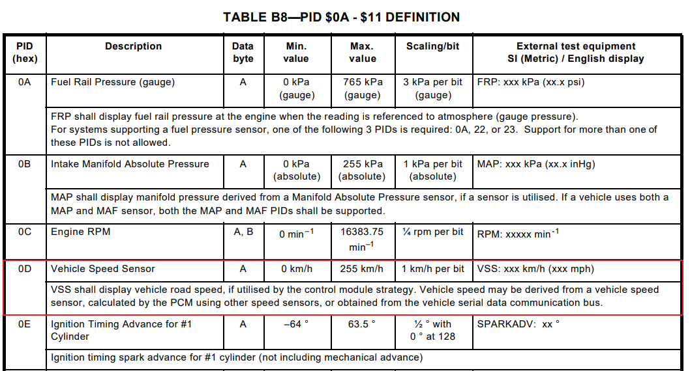
看到这里兴许有点疑问，消息这些消息为什么只有7个字节，从Byte1~Byte7，Byte0 在哪里，这个字节的值是什么。这也是我最初比较疑惑的地方，尝试通过其他标准来理解。之前有了解过 UDS 的结构，就拿来对比。回头看看对应的 OSI 7层模型就豁然开朗了，Byte0 是 ISO-TP 中的数据长度，在这个标准中省略掉了。
手动构造查询请求
还是以获取速度为例，获取速度。其他数据流的查询请求也类似。
首先确定CAN ID,OBD 请求中 CAN ID 为 0x7DF;
然后确定模式/SID, 车速为动力总线数据，所以模式/SID为 0x01；
因为模式/SID为 0x01，接下就是 PID，从附录B中找到速度的 PID 值 0x0D；
数据一共有两个字节所以数据长度为 0x02；
CAN 的单条数据有 8个字节，使用 0x55 填充剩余的字节；
- 最后，将报文整合起来，得到
7DF [8] 02 01 0D 55 55 55 55 55。
使用 CAN 卡发送请求后，收到肯定响应报文7E8 [8] 03 41 0D 32 AA AA AA AA，按照附录B 进行解析得到车速 50（0x32）km/s。
其他模式
其他模式的分析方法和上述模式1 的相似，并且较少使用附件，看起来相对容易一些。这里值讲解一下 VIN 码获取的部分。
VIN 俗称车架号，一般在驾驶员前侧前挡风玻璃左侧。查询 VIN，属于模式/SID 9(请求车辆信息)。查询 VIN 的消息类型为 0x02，请求报文如下。
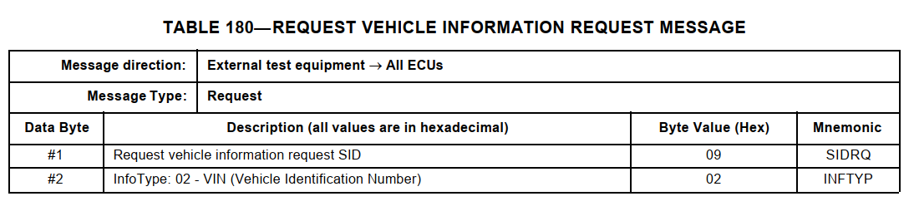
响应报文如下，查询到 VIN 的个数为1，VIN 的值为 1G1JC5444R7252367。
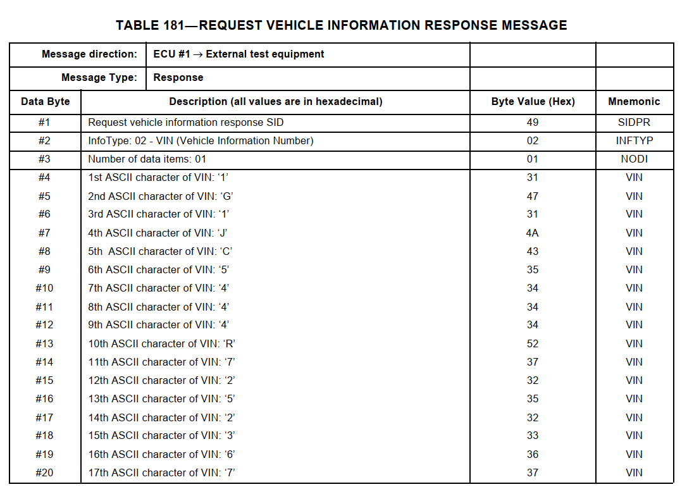
根据上面两个表封装成的 CAN 报文如下。
请求:
1
7DF [8] 02 09 02 00 00 00 00 00
响应:
1
2
37E8 [8] 10 14 49 02 01 31 47 31
7E8 [8] 21 4a 43 35 34 34 34 52
7E8 [8] 22 37 32 35 32 33 36 37
总结
虽然此次为赛前准备的东西没有用上，但是通过这个过程较为深入的学习 OBD-II 诊断协议。由于不是出自汽车领域，对协议细节不是很了解，以前一直依靠于工具获取，不知道具体的字段定义，经过这次的学习，弄清楚了 SAE J1979 标准，还有它与 UDS(ISO 14429 的关系)。它们的使用场景不同，但有着相似消息结构。也知道了为什么 UDS 的 SID 是从0x10 开始的，是为了兼容 SAE J1979。车联网的通信协议众多，各种协议相互交叉应用，阅读理解起来确实不易，日拱一卒。